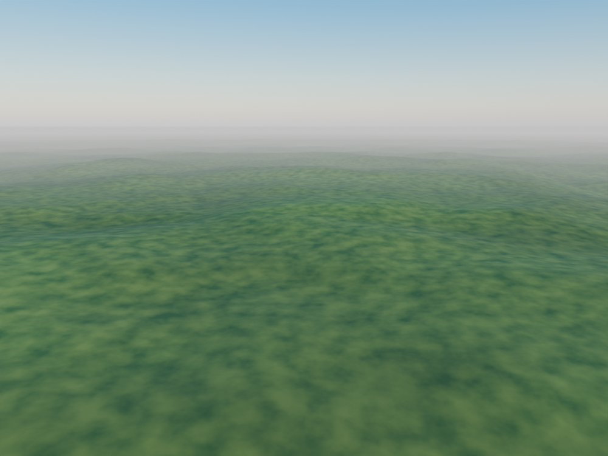
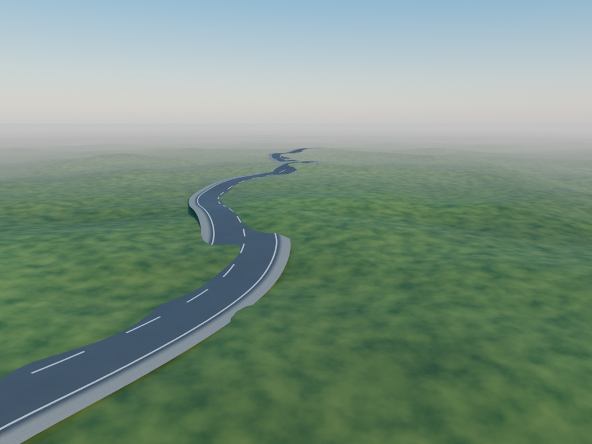
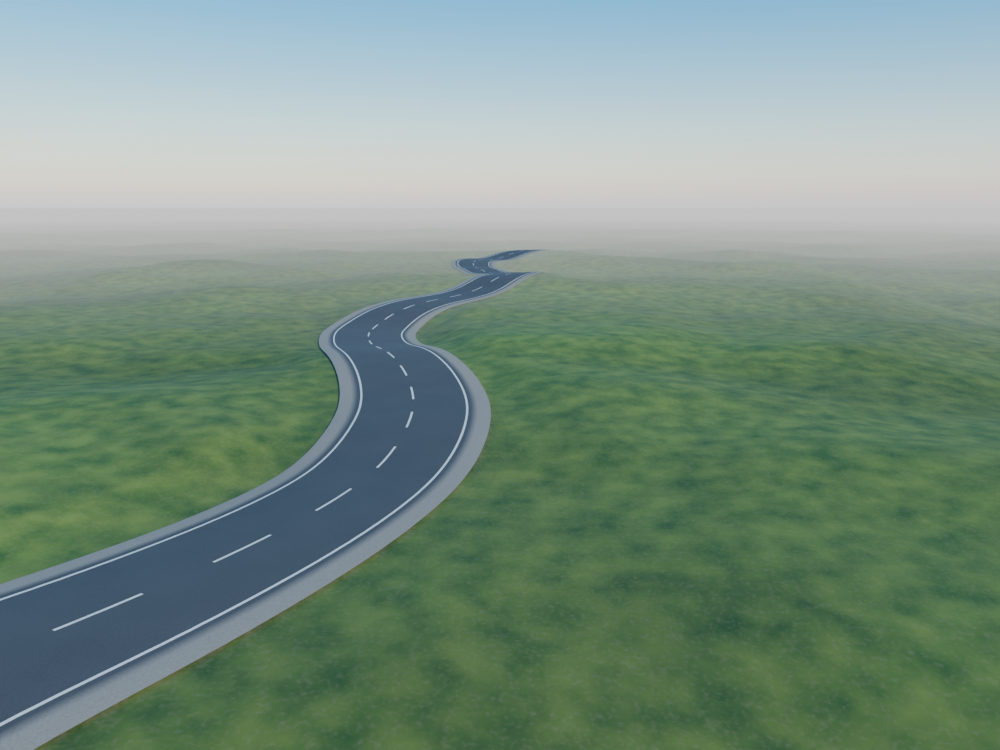
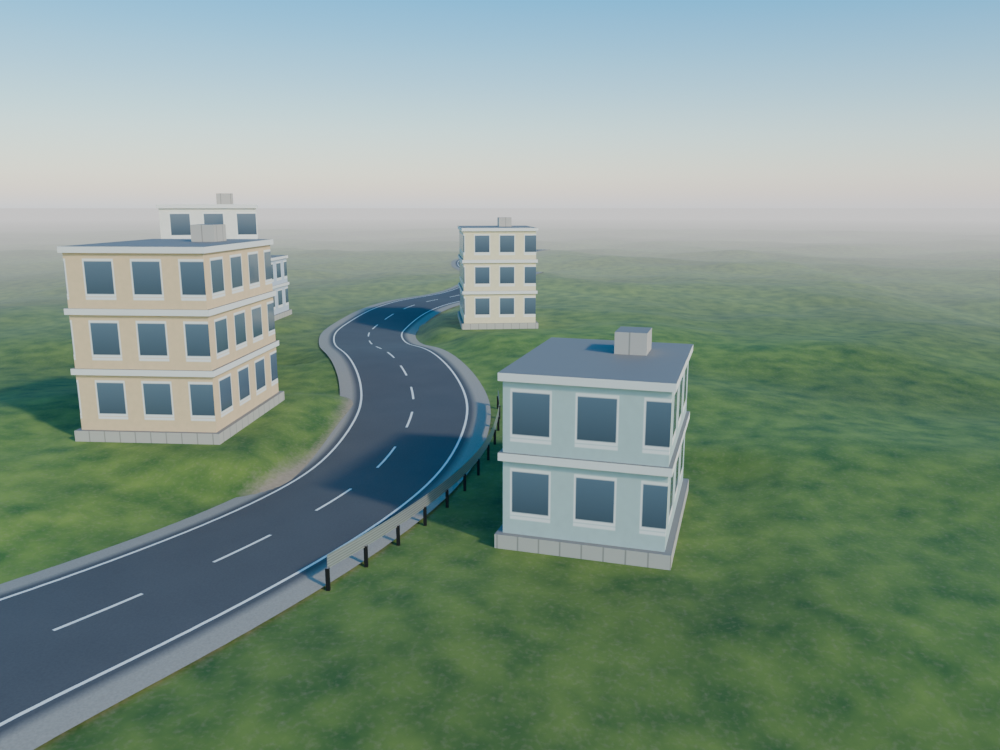
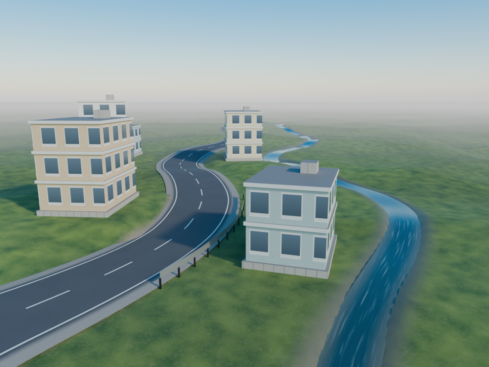
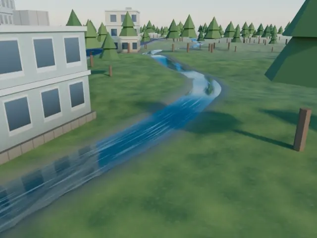
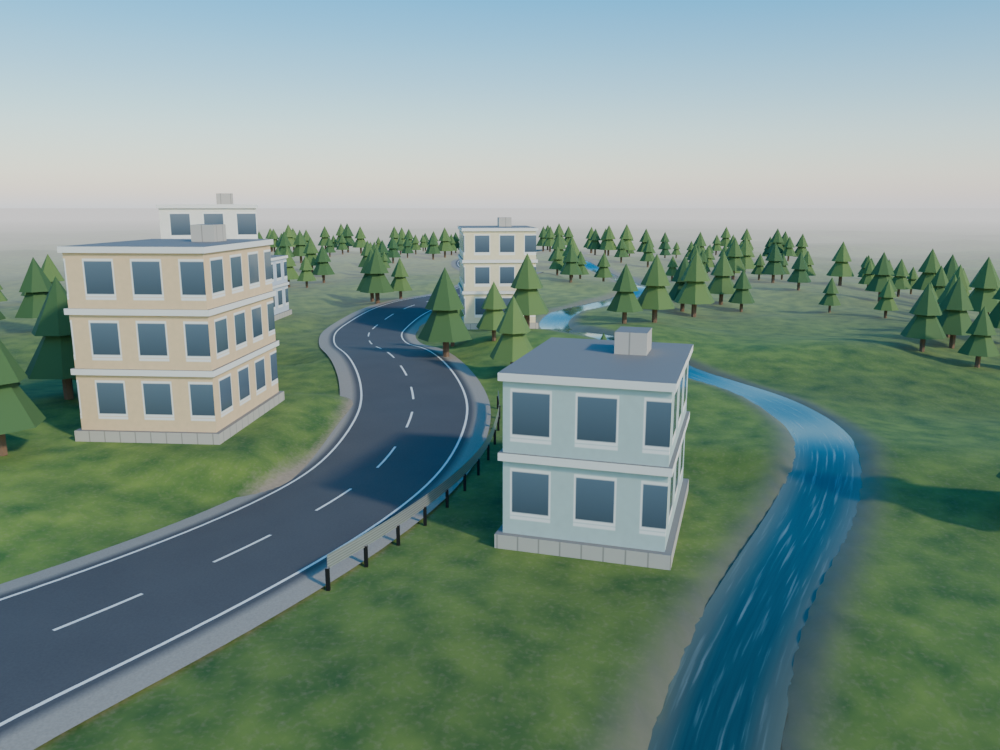
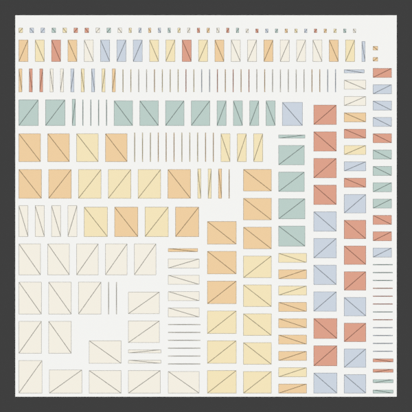
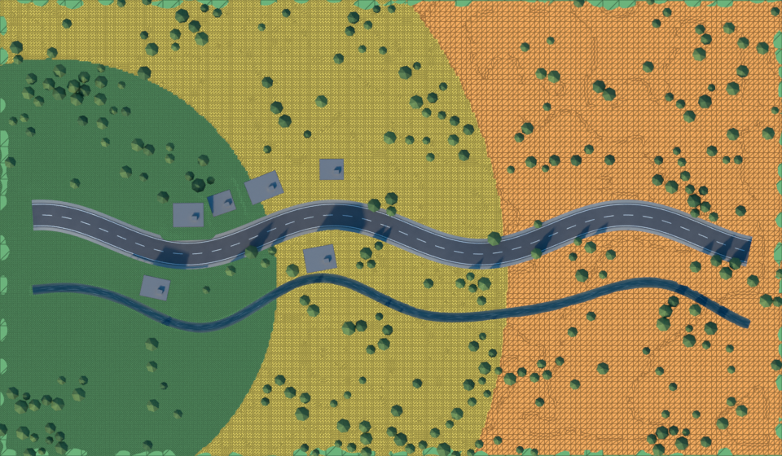

Products › BaseNode Packs › Game Art Tools › Tutorial: A game level
A game level
A small level for a game: a road winding over rolling ground, houses along it, a stream running beside it, trees around them. Every piece is laid the way a level artist lays it, and comes out ready for an engine: UV maps in metres, a trim sheet, a flowmap, a lightmap UV map, baked vertex colors, levels of detail.

You will learn
- The craft. Lay a road on a terrain and the terrain under the road, texture buildings from one trim sheet by the width of their faces, run water along a flowmap, and give the engine what it asks for: a lightmap UV map, vertex colors, levels of detail.
- The language. One geometry graph that grows a block at a time; a graph of your own,
house, that returns two geometries; a closure handed to a shader group; one mesh reused as the input of the next module (the road flattens the ground, the ground carries the houses, the pads level the ground). Compare two steps to see what changed.
This page goes faster on the basics than Lunar ground, which starts from a flat square: a noise, SetPosition, a material. Read it first if those are new to you.
Before you start
You need Blender 5, the Base Node add-on, version 0.13.1 or later, and the Game Art Tools pack: it carries the four modules this tutorial assembles.
The pack is sold by the author of Base Node, apart from the open source project. The steps are free to read, copy and change; the modules they use are not.
| Module | Kind | What it gives |
|---|---|---|
roads | geometry | road: a mesh of lanes and shoulders along a curve, banked, laid on a terrain, mapped in metres; flatten_terrain and road_mask_on_terrain bring the terrain to it; terrain_height reads the ground under a point. |
trim_sheets | geometry | trim_faces: faces mapped to the row of a trim sheet their width calls for; trim_strip: strips along curves, mapped along their length. |
flowmaps | geometry and shader | flowmap: a flow on a mesh, from its slope, along curves, around obstacles, stored as engines read it; flowmap_read and flow_texture: the two-phase blend in the material. |
game_export | geometry | lightmap_uv, bake_vertex_color, lod_by_distance. |
Every block below is a complete .bn file, its code beside the nodes it builds. Two ways to try a step:
- Drag it. Drag the file icon of its block, or its title, onto empty space in Blender's 3D Viewport, and keep Instantiate the Example: a new object carries
game_levelat the 3D cursor. A click on the file icon downloads the file instead. - Paste it. Press the copy button of its block, open a Geometry Node editor, press Ctrl+Shift+V and pick Add as Modifier, on any mesh object: the graph makes its own ground and ignores the mesh it is given.
The pictures are rendered from these exact files by render.py, under the same daylight sky and sun, from the same camera except where a caption says otherwise.
1. Rolling ground
The level is a grid, 240 m by 140 m, a point every 60 cm: dense enough for a road to be laid on it and for the ground to be flattened under the road. A slow noise lifts it into hills, 7 m from the lowest to the highest.
step1_ground.bn: game_level, haze, Ground
- No edge at the horizon. A level ends; the world around it should not.
beyondcarries the same hills on a grid twenty times coarser, 1 m lower so that it stays under the level, and eases them down to a plain far away. Over its last 10 m, the level sinks by the same metre: the two meet without a step. hazefades every surface into the pale air with its distance from the camera, all of it by 1 km: the far land melts into the sky, as in a game's distance fog.- The grass is two noises: tufts of two greens, and meadows a few tens of metres across, lighter and darker.

2. A road along a curve
A curve is the road's path: 221 points from west to east, swung 6 m either way by a sine, a long gentle S. road builds the road along it, on the ground.
step2_road.bn: game_level, Asphalt
- The cross-section. 7 m of carriageway in two lanes; a shoulder of 1.2 m on each side, falling 8 cm to its outer edge, as gravel does. A row of points every 50 cm along the curve.
- Banking.
bank_by_curvaturetilts the road into its turns, as an engineer would for speed;max_bank: 0.06keeps it under 3.4°, mild enough to drive on. - Laid on the ground along its centre. Each row takes the height of the ground under the middle of the road, smoothed over 40 rows (20 m): the road climbs and dips with the hills without following every bump, and its cross-section stays as banked.
conform: 1would lay every point on the ground instead, warping the road with it. - Mapped in metres. The road's UV map runs
uacross its whole width, 0 to 1, andvalong it, a tile every 6 m.Asphaltdraws its lines from it: the centre line whereuis 0.5, dashed 3 m on and 3 m off byfract(v); the edge lines 3.3 m either side. They stay straight and evenly dashed however the road bends.

3. The ground under the road
The road keeps its shape; the ground must make room for it. Two lines on the ground, after the road is made:
step3_verges.bn: game_level, Ground
flatten_terrainlays every point of the ground under the road 12 cm below it, and eases the ground back to its own height over 5 m past the edge: a cut into the hillside on one side, a fill on the other, and no grass through the asphalt.road_mask_on_terrainstoresroad_maskon the ground: 1 under the carriageway, fading to 0 1.5 m past the shoulders.Groundwears the grass to dirt there, along a ragged line, as tyres and feet wear a verge.- The road comes first, the ground after: the road is laid on the rough ground, then the ground is fitted to the road. The other order would have nothing to flatten to.

4. Houses on a trim sheet
A trim sheet is how games texture whole towns with one texture: horizontal rows, each tiling along its length, a wall with windows, a guard rail, stone, a cornice. A face is mapped to the row that fits its width.
step4_houses.bn: game_level, house, Trims
housereturns two things: the house, storeys of 3 m on a stone plinth, set at the height of the ground under it; and its pad, a flat grid a little larger.flatten_terrain, the same as for the road, levels the ground to the pads: each house stands on a terrace cut into the slope, upright.trim_facesmaps each wall face (abs(Normal().z) < 0.5) to the row its width calls for, on a sheet 6 m across whose rows are 3.2, 1.6, 0.8 and 0.4 m tall: the walls, 3 m, take the first row, windows and all; the plinths and the rooftop units, about 1 m, the stone; the ledges, 30 cm, the cornice. Nobody picks a row by hand: change the size of a house and its faces find their rows again.- It stores the row on the faces as
trim_row;Trimsreads it, as the texture in an engine would only read the UVs. trim_stripmakes the guard rail: a strip along a curve, upright, mapped along its length to the second row, forced withrow: 1.

5. A stream on a flowmap
Water in a game is a flat strip whose texture moves. Which way it moves, at each point, is a flowmap: a colour on the mesh that the shader reads.
step5_stream.bn: game_level, Stream
- The strip is a road too: one lane, 3.2 m, no shoulders, laid 25 cm below the ground along a curve of its own. It gets the same UV map,
uacross andvalong. flowmaptakes its direction from the curve the stream was drawn along (slope: 0: the water does not follow the hills, it follows its bed) and stores it as engines read it, on the face corners: red and green the direction in the frame of the UV map, blue its strength.- The bed. A narrower channel, 1.2 m, is carved 50 cm under the water and its banks rise back to the ground over 1.4 m: they cut through the edges of the strip, so the water has no edge to see.
wetdarkens the banks to mud. - The two-phase blend. A texture pushed along the flow for ever would stretch until it tears.
flow_texturepushes it for one cycle, then starts again; a second copy, half a cycle apart, hides each restart, the two weighed by a triangle wave. The texture is handed to it as aclosure, long streaks of noise, read at both phases.timeis a still in the file: a shader graph has no clock; drive it by the frame, as below.


time driven from 0 to 1 over 48 frames: one cycle of the blend, so the loop has no seam.6. Trees, kept off the road
The masks that a road stores are also what a scatter reads. A wider mask of the road, the pads and the stream keeps the trees off them.
step6_trees.bn: game_level, tree
road_mask_on_terrainagain, onmade + pads + water, namedclear, fading over 6 m: a tree's crown never hangs over the road or a roof.density_factormultiplies three things: off the clear zones, in groves from a slow noise, and 25 m clear of the camera.treeis a low-poly pine of a trunk and two cones;tree_tint, stored on the instances, gives each its own green.

7. Ready for the engine
The level looks right; now it must leave Blender. Three lines of game_export, two on the houses and one on the ground.
step7_export.bn: game_level, Trims
bake_vertex_colorstores the grime at the foot of the houses, 1 on the ground fading to 0 3 m up, in the red of the color attributeColor: Blender's glTF exporter writes it asCOLOR_0, which every engine reads.Trimsdarkens the walls by it, as the engine's shader would.lightmap_uvadds a second UV map,lightmap: every face its own place in the unit square, none overlapping, a margin between them. The trim sheet's UVs overlap on purpose, every wall on the same row; baked lighting cannot share texels, so it needs this one (TEXCOORD_1in the glTF).lod_by_distancekeeps the ground near the camera as it is, and past 70 m merges its points in cells of 80 cm, twice as wide at each doubling of the distance: the far side of the level keeps a fraction of its points, where nobody can see them.- What the earlier steps stored is already for the engine too: the road's
road_color(its mask and UVs as a vertex color) and the stream'sflowmap.
None of this shows in a beauty render: the picture of step 7 is the picture of step 6, with grime at the foot of the walls. Here is what it adds, seen for what it is.

lightmap UV map of the six houses, laid flat: each face in its house's colour, packed into the unit square.
lod_level 0 in green, then 1 and 2, the cells drawn, wider with the distance.The knobs
Every module has its inputs, on its node in the Geometry Node editor. A few worth turning:
| Where | Input | What it does |
|---|---|---|
road | width, lanes, shoulder | The cross-section: how wide, how many lanes, how wide the shoulders. |
road | bank_by_curvature, max_bank | How much the road leans into its turns, and how far at most. |
road | smooth, conform | How long a stretch the height is smoothed over; 1 to lay every point on the ground. |
flatten_terrain | depth, falloff | How far below the road the ground goes, and how gently it comes back. |
trim_faces | sheet_size, rows, ratio | The texel density and the layout of the sheet: which row a face of a given width falls on. |
flowmap | slope, radius, blur | How much the water runs downhill, how far from the curve it follows it, how smooth the flow. |
flow_texture | strength, cycle | How far the texture travels in a cycle, and how long a cycle lasts. |
lod_by_distance | near, cell_size, levels | Where the detail starts to go, how coarse the first level, how many levels. |
Try: on step 7, set max_bank of road to 0.2 and bank_by_curvature to 8: a racing track. Set floors of house c to 6: its new walls take the same row of the sheet, with no other change.
To lay your own level, draw your own curves for the road and the stream, and replace the noise with your terrain: the modules only need a mesh dense enough to be flattened, and curves above it.
Take it to Blender
The finished level, in one file. Drag the card onto empty space in Blender's 3D Viewport and keep Instantiate the Example: a new object carries game_level. A click on the card downloads the file.
The steps before it, to start again from any of them:
The files, with the script that renders this page's pictures, are in examples/tutorials/game_level/.